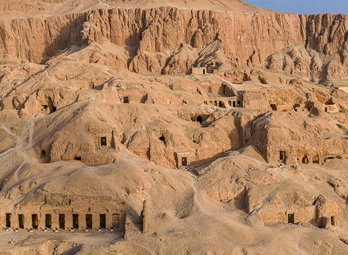

Valley of the Queens

Known in ancient times as "Ta-Set-Neferu" (The Place of Beauty), the Valley of the Queens is located near the Valley of the Kings and served as the burial site for the wives, princesses, and princes of the New Kingdom pharaohs. While not as expansive as the kings' valley, it holds significant historical importance and houses over 90 known tombs. The burials here highlight the vital religious and political roles that royal women and heirs played in the royal court during the 18th, 19th, and 20th Dynasties. The undisputed crown jewel of this necropolis is the Tomb of Queen Nefertari (QV66), the favorite wife of Ramses II. Widely considered one of the most beautiful tombs in all of Egypt, it is famous for its exceptionally vivid, deeply colored wall paintings that vividly depict the Queen's journey to the afterlife, her interactions with various deities, and her stunning royal garments.
| Location | Ticket Price (Foreign Tourist) | Visiting Hours |
|---|---|---|
| West Bank, Luxor |
Adult: 220 EGP Student: 110 EGP |
6:00 AM – 5:00 PM |